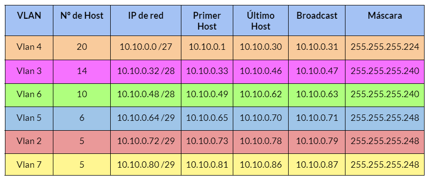
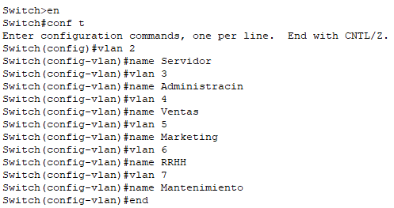
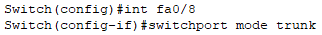
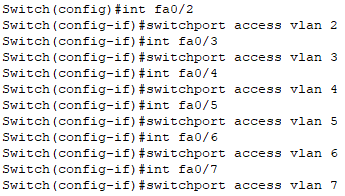
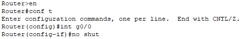
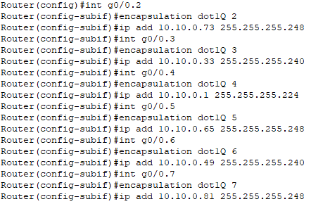
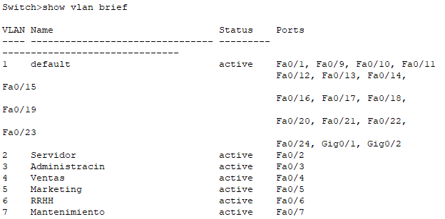
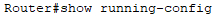
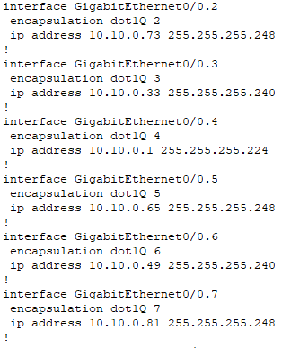

Segmentar una red es una de las medidas más básicas de seguridad que podemos llevar a cabo en una infraestructura, ya no solo por incrementar su seguridad sino también por su rendimiento y posibilidad de gestión.
Como organización, definiremos unos criterios para dividir los equipos de nuestra red. En nuestro caso hemos optado por una división en función de la funcionalidad para así facilitar que los departamentos se comuniquen y compartan recursos entre sí.
Como hemos optado por una división por funcionalidad realizaremos la división mediante VLSM para así asignar VLANs a los diferentes departamentos de nuestra empresa.
Tras un estudio sobre los departamentos que posee nuestra empresa actualmente se han definido las siguientes redes locales virtuales:
Mediante VLSM hemos realizado el direccionamiento de cada VLAN y hemos obtenido el siguiente resultado:

Para la creación y configuración de las diferentes VLANs nos dirigiremos a nuestro Switch, o varios Switches, y por introducir los siguientes comandos:

Una vez creadas las diferentes VLANs continuaremos con la configuración de cada una de las interfaces comenzando por aquella que este conectada a nuestro router configurandolo en modo trunk, en caso de que hubiera otro switch este tambien se configuraría en modo trunk.

A continuación configuraremos las interfaces que vayan hacia los equipos de las diferentes VLANs en modo access de la siguiente manera:

Una vez configurado el switch, o los switches en el caso de que tengamos más de uno, pasaremos a configurar nuestro router mediante el método router-on-stick de la siguiente manera:

A continuación configuraremos cada red virtual, es decir, cada VLAN con su puerta de enlace y su mascara de red de la siguiente manera:

Para comprobar en el switch que las configuraciones de las VLANs y su conexión con cada una de las interfaces ejecutamos el siguiente comando en él:

Finalmente para comprobar en el router las configuraciones realizadas en los pasos anteriores ejecutamos el siguiente comando en la terminal de nuestro router:

